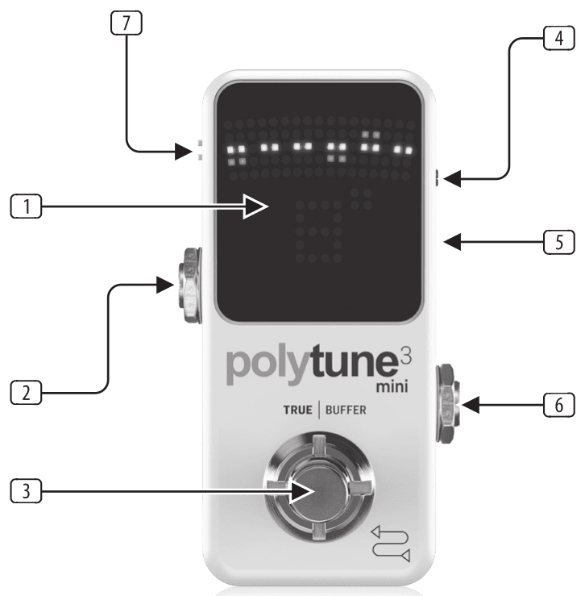

POLYTUNE 3 MINI
Quick Start Guide
Safety Instruction
- Read these instructions.
- Keep these instructions.
- Heed all warnings.
- Follow all instructions.
- Do not use this apparatus near water.
- Clean only with dry cloth.
- Do not block any ventilation openings. Install in accordance with the manufacturer’s instructions.
- Do not install near any heat sources such as radiators, heat registers, stoves, or other apparatus (including amplifiers) that produce heat.
- Use only attachments/accessories specified by the manufacturer.
- Use only with the cart, stand, tripod, bracket, or table specified by the manufacturer, or sold with the apparatus. When a cart is used, use caution when moving the cart/apparatus combination to avoid injury from tip-over.
- Correct disposal of this product: This symbol indicates that this product must not be disposed of with household waste, according to the WEEE Directive (2012/19/EU) and your national law. This product should be taken to a collection center licensed for the recycling of waste electrical and electronic equipment (EEE). The mishandling of this type of waste could have a possible negative impact on the environment and human health due to potentially hazardous substances that are generally associated with EEE. At the same time, your cooperation in the correct disposal of this product will contribute to the efficient use of natural resources. For more information about where you can take your waste equipment for recycling, please contact your local city office, or your household waste collection service.
- Do not install in a confined space, such as a book case or similar unit.
- Do not place naked flame sources, such as lighted candles, on the apparatus.
Controls

1Display - Pick one string for single-string tuning, or strum all of the strings for polyphonic tuning.
2Output
3Footswitch - Turns the tuner on and off. Press and hold the footswitch to toggle between standard and drop-D tuning.
4Tuning Mode - Select between standard “E” or one of the dropped tuning or capo modes. Press and hold to switch between chromatic and strobe mode.
5Power Input - Connect a 9 V / >100 mA power supply. (Not included)
6Input
7True Bypass / Buffered Bypass - Choose between Bypass modes:
| Switch configuration | Mode |
|---|---|
| Both switches set to OFF | True Bypass |
| Switch 1 set to ON Switch 2 set to OFF position | Buffered Bypass |
| Both switches set to ON | Buffered Bypass, Display Always On |
Federal Communications Commission Compliance Information
TC Electronic
POLYTUNE 3 MINI
Responsible Party Name: Music Tribe Commercial NV Inc.
Address: 122 E. 42nd St.1, 8th Floor NY, NY 10168, United States
Email Address: legal@musictribe.com
POLYTUNE 3 MINI
This equipment has been tested and found to comply with the limits for a Class B digital device, pursuant to part 15 of the FCC Rules. These limits are designed to provide reasonable protection against harmful interference in a residential installation. This equipment generates, uses and can radiate radio frequency energy and, if not installed and used in accordance with the instructions, may cause harmful interference to radio communications. However, there is no guarantee that interference will not occur in a particular installation. If this equipment does cause harmful interference to radio or television reception, which can be determined by turning the equipment off and on, the user is encouraged to try to correct the interference by one or more of the following measures:
- Reorient or relocate the receiving antenna.
- Increase the separation between the equipment and receiver.
- Connect the equipment into an outlet on a circuit different from that to which the receiver is connected.
- Consult the dealer or an experienced radio/TV technician for help.
This equipment complies with Part 15 of the FCC rules. Operation is subject to the following two conditions:
(1) this device may not cause harmful interference, and
(2) this device must accept any interference received, including interference that may cause undesired operation.
Important information:
Changes or modifications to the equipment not expressly approved by Music Tribe can void the user’s authority to use the equipment.
Hereby, Music Tribe declares that this product is in compliance with Directive 2014/30/EU, Directive 2011/65/EU and Amendment 2015/863/EU, Directive 2012/19/EU, Regulation 519/2012 REACH SVHC and Directive 1907/2006/EC.
Full text of EU DoC is available at https://community.musictribe.com/
EU Representative: Music Tribe Brands DK A/S
Address: Gammel Strand 44, DK-1202 København K, Denmark
UK Representative: Music Tribe Brands UK Ltd.
Address: 6 Lloyds Avenue, Unit 4CL London EC3N 3AX, United Kingdom